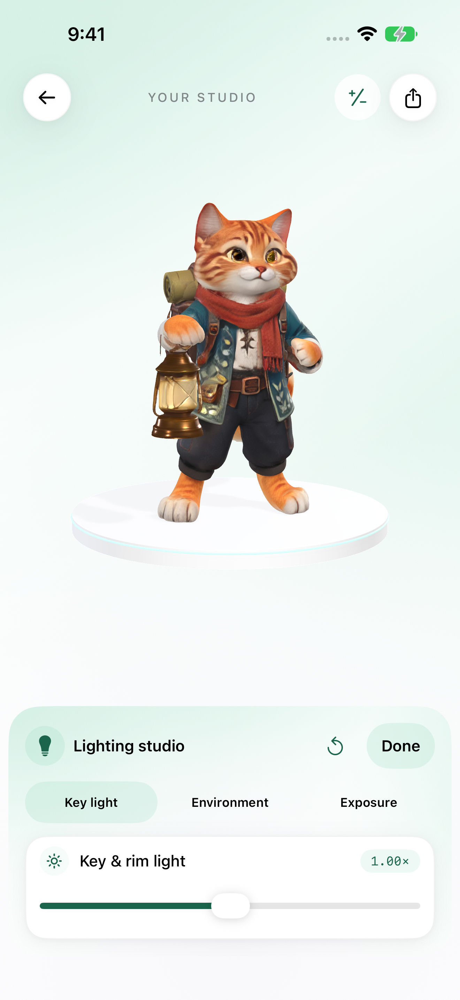
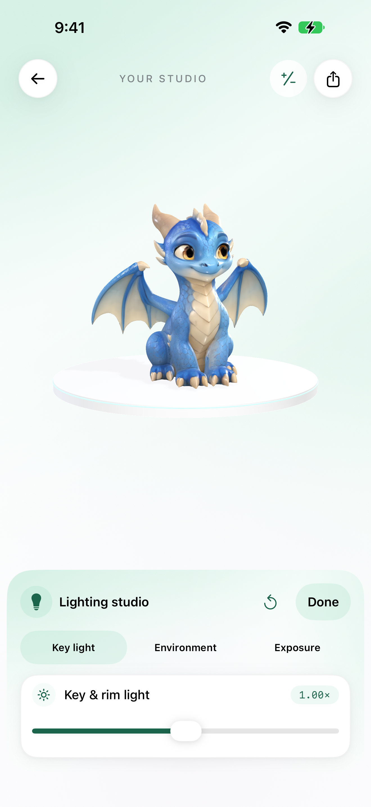
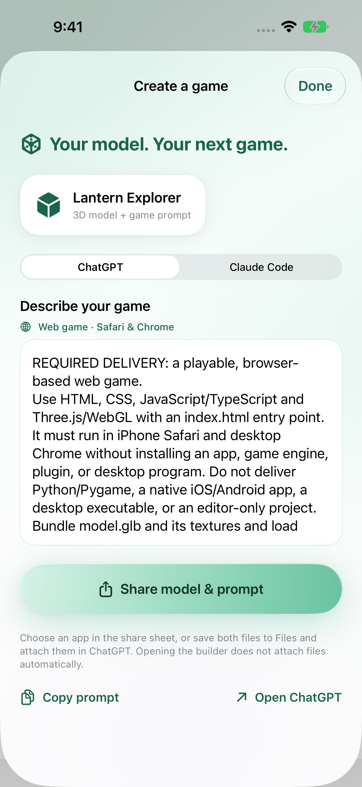
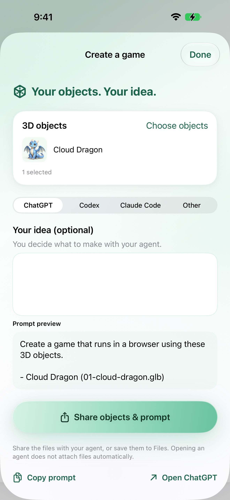
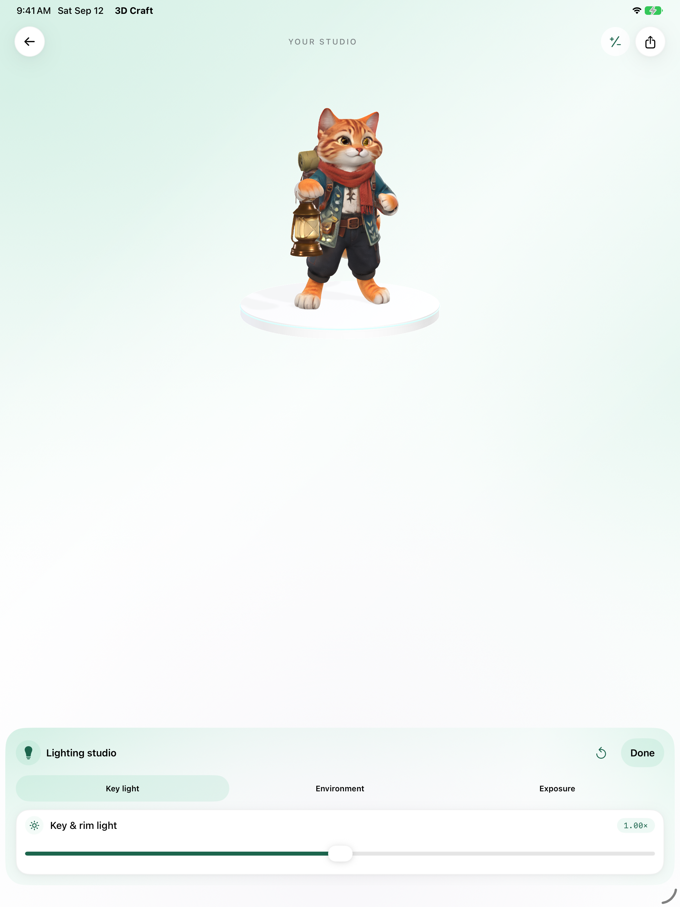
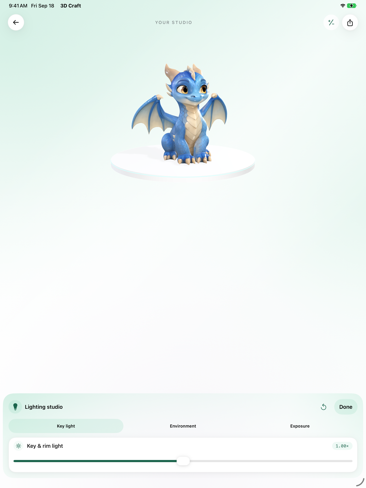
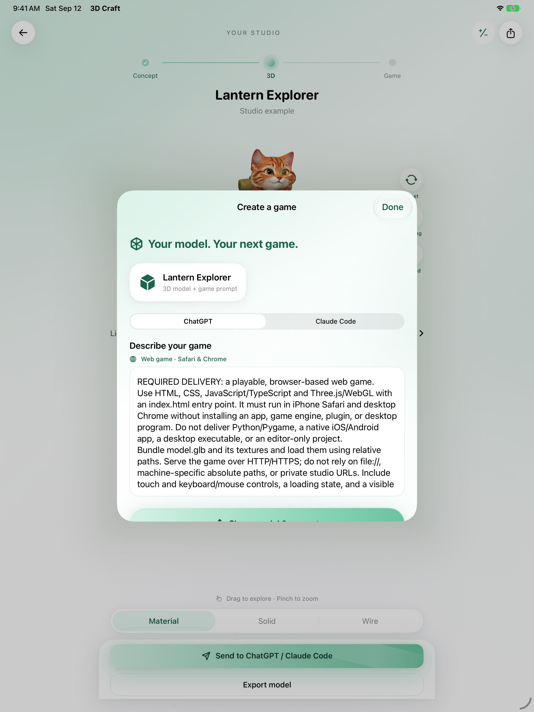
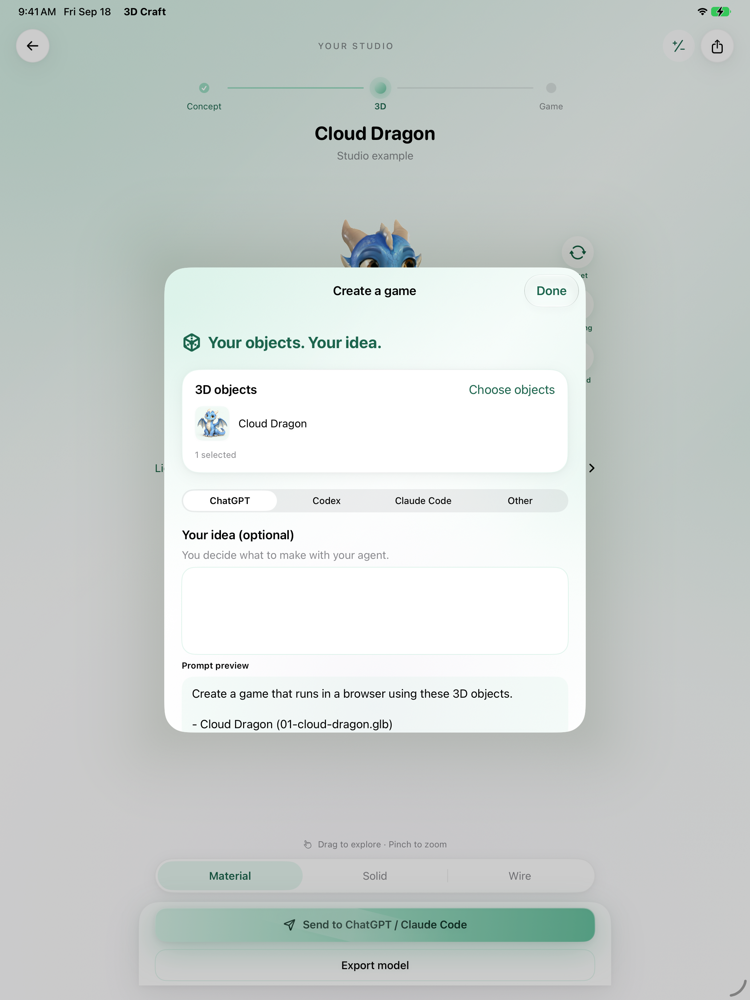

3D CRAFT · PENDING OWNER REVIEW · NOT UPLOADED
Screenshots 03 and 05 with Cloud Dragon
Before (approved 12 September, cat) and after (real native capture, 18 September). All other listing images remain unchanged. Details.
iPhone 6.9″ · 03 Lighting studio

Before
AfteriPhone 6.9″ · 05 Create a game

Before
After (current sheet design)iPad 13″ · 03 Lighting studio

Before
AfteriPad 13″ · 05 Create a game

Before
After (current sheet design)